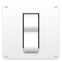
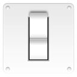
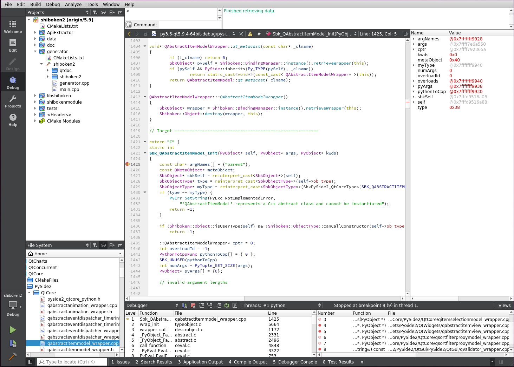
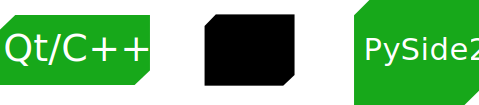
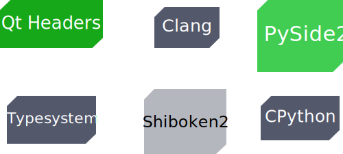

Introduction to
Qt for Python
Workshop
Dr. Cristián Maureira-Fredes
Software Engineer @ TQtC
User Interfaces


The Qt Framework
Qt /kjut/
Cross platform C++ framework, for UI and more.


QObject
- Base class of all Qt Objects.
- The heart of the Qt Object Model
- Organized by object trees
- Can communicate with other QObjects
Signals & Slots

Signals & Slots

Signals & Slots

Designing interfaces
(the hard way)
Empty window
# Constructor
...
...
Horizontal layout

# Constructor
...
main = QVBoxLayout()
...
Widget and vertical layout

# Constructor
...
main = QVBoxLayout()
left = QWidget('left')
right = QHBoxLayout()
main.addWidget(widget)
main.addLayout(right)
...
Widgets

# Constructor
...
main = QVBoxLayout()
left = QWidget('left')
right = QHBoxLayout()
right.addWidget(QWidget('1'))
right.addWidget(QWidget('2'))
right.addWidget(QWidget('3'))
main.addWidget(widget)
main.addLayout(right)
...
Designing interfaces
(the easy way)
QtCreator

...so we will learn the hard way
(╯°□°）╯︵ ┻━┻
How does it look like?
import sys
from PySide2.QtWidgets import QApplication, QLabel
# Qt Application
app = QApplication([])
# Qt Widget
label = QLabel("Hello World!")
label.show()
# Executing app
sys.exit(app.exec_())
Clicking a button
import sys
from PySide2.QtCore import Qt, Slot
from PySide2.QtWidgets import QApplication, QPushButton
@Slot()
def something():
print("something!")
# Qt Application
app = QApplication([])
# Qt Widget
button = QPushButton("Push me!")
button.click.connect(something)
button.show()
# Executing app
sys.exit(app.exec_())
Design pattern
class NewClass(QClass):
def __init__(self):
QClass.__init__(self)
...
def some_method(self):
...
@Slot()
def some_slot(self):
...
if __name__ == "__main__":
app = QApplication([])
window = NewClass()
window.show()
sys.exit(app.exec_())
A better "click"
class MyWidget(QWidget):
def __init__(self):
QWidget.__init__(self)
self.hello = ["Hallo Welt", "Hei maailma", "Hola Mundo", "Привет мир"]
self.button = QPushButton("Click me!")
self.text = QLabel("Hello World")
self.text.setAlignment(Qt.AlignCenter)
self.layout = QVBoxLayout()
self.layout.addWidget(self.text)
self.layout.addWidget(self.button)
self.setLayout(self.layout)
# Connecting the signal
self.button.clicked.connect(self.magic)
@Slot()
def magic(self):
self.text.setText(random.choice(self.hello))
if __name__ == "__main__":
app = QApplication(sys.argv)
widget = MyWidget()
widget.resize(800, 600)
widget.show()
sys.exit(app.exec_())
...but how is this available in Python?

The whole enchilada

A couple of examples
Installation
- Install Python
pip install virtualenv(optional)pip install PySide2
This workshop
- Installation (Python and PySide2)
- Test a couple of examples (examples directory)
- Write an application (tutorial directory)
you can use Python 2...
Q&A
#qt-pyside on Freenode
Mailing list: bit.ly/pyside2
qt.io/qt-for-python
pyside.org
@cmaureir